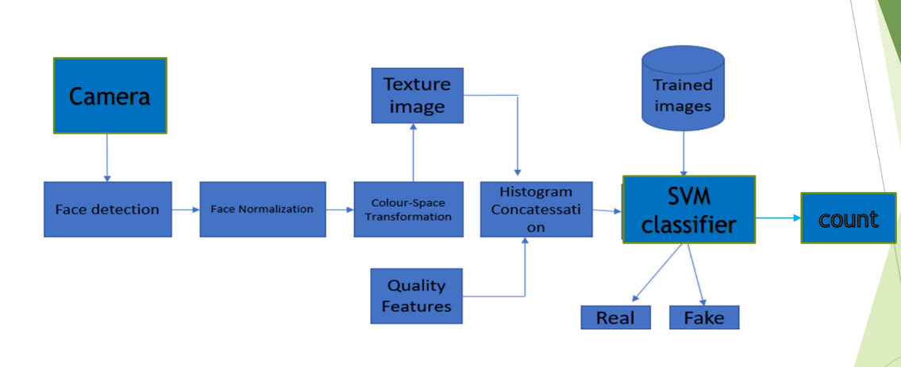
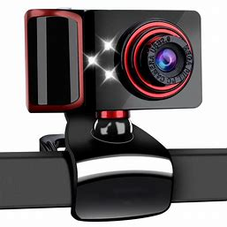
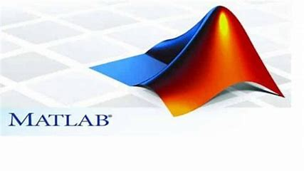
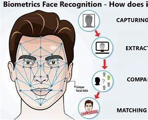

FACE SPOOF DETECTION USING COLOUR
TEXTURE ANALYSIS BASED ON CNN
Description
Fingerprint, face, and iris are the biometric traits most frequently used in present
authentication systems.
Face is the important biometric as its natural, ease to use and non-intrusiveness.
A biometric authentication is realized in two steps: the enrolment and the verification
phases.
Face is more popular as it doesn’t require any additional hardware and almost all
mobile phones are equipped with front facing camera. However, the problem of
spoofing attacks can challenge face biometric systems in practical applications.
Spoofing attacks can easily launch by photo attacks, video replays and 3 D masks of
the face. Recent advancements such as plastic surgery, 3D face mask and easily
availability of images and videos in the social network help the attackers to spoof the
system. Though several face spoofing detection techniques have been proposed, the
issue is still unsolved due to sensitive constraints and limitations
Block Daigram

Hardware & Software Requirement
- Stepper Motor
CAMERA : Is used to take input and they provide excellent accuracy

- MATLAB
MATLAB: MATLAB stands for Matrix Laboratory. It is a high-performance language that is used for technical computing. It was developed by Cleve Molar of the company MathWorks.Inc in the year 1984.It is written in C, C++, Java. It allows matrix manipulations, plotting of functions, implementation of algorithms and creation of user interfaces.
Getting started with MATLAB:It is both a programming language as well as a programming environment. It allows the computation of statements in the command window itself.

- SVM classifier
SVM is a binary classification method that finds the optimal linear decision surface based on the concept of structural risk minimization. The decision surface is a weighted combination of elements of the training set. These elements are called support vectors and characterize the boundary between the two classes.

Praposed System
- The proposed system uses a color texture analysis based face anti – spoofing. Face spoofing
attacks are most likely performed by displaying the targeted faces using prints, video displays or
masks to the input sensor.
- The most crude attack attempts performed, e.g. using small mobile phone displays or prints with
strong artifacts, can be detected by analysing the texture and the quality of the captured grayscale
face images.
- It is reasonable to assume that fake faces of higher quality are harder or nearly impossible to
detect using only luminance information of webcam-quality images.
- This system uses two phases the testing phase and the training phase.
- The features used are the texture and quality based features.
- Texture based descriptors are HOG
- that deal with shape information, mLBP, deals with local information and Gabour Wavelet to
enhance the texture Representation .
- The quality method extracting image quality features to find.
- the difference between real and fake faces.
- Distortion features can capture the quality differences between the different reflection properties
of different materials.
- Quality features are color distortion, colour diversity, specular reflection and
blurriness
Exisiting System
- Texture based face anti-spoofing has been widely adopted in face anti-spoofing research.
- Texture analysis techniques mainly compare the texture pattern of the face which is captured
by the sensor in the system with the texture pattern of the real face which is present in the
database.
- techniques take the advantage of detectable texture patterns such as print failures, and
overall image blur to detect attacks.
- analysis based approach is easy to implement and it does not need user cooperation.
Advantages
- Very simple to implement
- No user collaboration needed
- Difficult to spoof
- Low user collaboration needed
- Very difficult to spoof
- Cover maximum type of attacks
- Independent from user collaboration
- Good generalization ability
- Low computational complexity
- Fast response
DisAdvantages
- Good feature vectors are needed to identify the spoof
- Low quality image or video does not give good result
- Several video sequences are needed
- Low motion activity in a video does not give good result
- High computational complexity
- Different classifiers needed for different spoof attacks.
- More time consuming
Applications
- SVMs can be used to solve various real-world problems
- SVMs are helpful in text and hypertext categorization, as their application can significantly reduce the need for labeled training instances in both the standard inductive and transductive settings.
- Classification of images can also be performed using SVMs
- Classification of satellite data like SAR data using supervised SVM.
- Hand-written characters can be recognized using SVM.
Conclusion
The CNN-based presentation attack detection (PAD) and eye blinking detection systems were offered as the technique for detecting 3D mask attacks in the visible spectrum. The final Conv layer textural evidence of CNN is learned via a max-pooling procedure in this manner. The proposed PAD method underwent two open trials. Available data sets include silicone and paper masks. Also, there are various YouTube videos featuring 3D latex masks. With the help of a visible spectrum mask-dependent PA, it is possible to discriminate against the maximum pooling phase with great accuracy in both the dataset and YouTube videos, according to excellent results.
Back